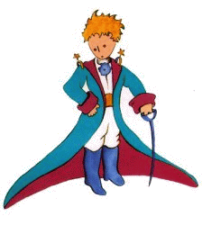
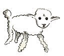
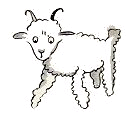
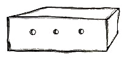

小王子 The Little Prince
第2章
第2章
我就这样孤独地生活着，没有一个能真正谈得来的人，一直到六年前在撒哈拉沙漠上发生了那次故障。我的发动机里有个东西损坏了。当时由于我既没有带机械师也没有带旅客，我就试图独自完成这个困难的维修工作。这对我来说是个生与死的问题。我随身带的水只够饮用一星期。
第一天晚上我就睡在这远离人间烟火的大沙漠上。我比大海中伏在小木排上的遇难者还要孤独得多。而在第二天拂晓，当一个奇怪的小声音叫醒我的时候，你们可以想见我当时是多么吃惊。这小小的声音说道：
“请你给我画一只羊，好吗？”
“啊！”
“给我画一只羊…”
我象是受到惊雷轰击一般，一下子就站立起来。我使劲地揉了揉眼睛，仔细地看了看。我看见一个十分奇怪的小家伙严肃地朝我凝眸望着。这是后来我给他画出来的最好的一副画像。
可是，我的画当然要比他本人的模样逊色得多。这不是我的过错。六岁时，大人们使我对我的画家生涯失去了勇气，除了画过开着肚皮和闭着肚皮的蟒蛇，后来再没有学过画。
我惊奇地睁大着眼睛看着这突然出现的小家伙。你们不要忘记，我当时处在远离人烟千里之外的地方。而这个小家伙给我的印象是，他既不象迷了路的样子，也没有半点疲乏、饥渴、惧怕的神情。他丝毫不象是一个迷失在旷无人烟的大沙漠中的孩子。当我在惊讶之中终于又能说出话来的时候，对他说道：
“唉，你在这儿干什么？”
可是他却不慌不忙地好象有一件重要的事一般，对我重复地说道：
“请…给我画一只羊…”
当一种神秘的东西把你镇住的时候，你是不敢不听从它的支配的，在这旷无人烟的沙漠上，面临死亡的危险的情况下，尽管这样的举动使我感到十分荒诞，我还是掏出了一张纸和一支钢笔。这时我却又记起，我只学过地理、历史、算术和语法，就有点不大高兴地对小家伙说我不会画画。他回答我说：
“没有关系，给我画一只羊吧！”
因为我从来没有画过羊，我就给他重画我所仅仅会画的两副画中的那副闭着肚皮的巨蟒。
“不，不！我不要蟒蛇，它肚子里还有一头象。”
我听了他的话，简直目瞪口呆。他接着说：“巨蟒这东西太危险，大象又太占地方。我住的地方非常小，我需要一只羊。给我画一只羊吧。”
我就给他画了。
他专心地看着，随后又说：
“我不要，这只羊已经病得很重了。给我重新画一只。”
我又画了起来。
我的这位朋友天真可爱地笑了，并且客气地拒绝道：“你看，你画的不是小。羊，是头公羊，还有犄角呢。”
于是我又重新画了一张。

这副画同前几副一样又被拒绝了。
“这一只太老了。我想要一只能活得长的羊。”
我不耐烦了。因为我急于要检修发动机，于是就草草画了这张画，并且匆匆地对他说道：
“这是一只箱子，你要的羊就在里面。”
这时我十分惊奇地看到我的这位小评判员喜笑颜开。他说：
“这正是我想要的，…你说这只羊需要很多草吗？”
“为什么问这个呢？”
“因为我那里地方非常小…”
“我给你画的是一只很小的小羊，地方小也够喂养它的。”
他把脑袋靠近这张画。
“并不象你说的那么小…瞧！它睡着了…”
就这样，我认识了小王子。